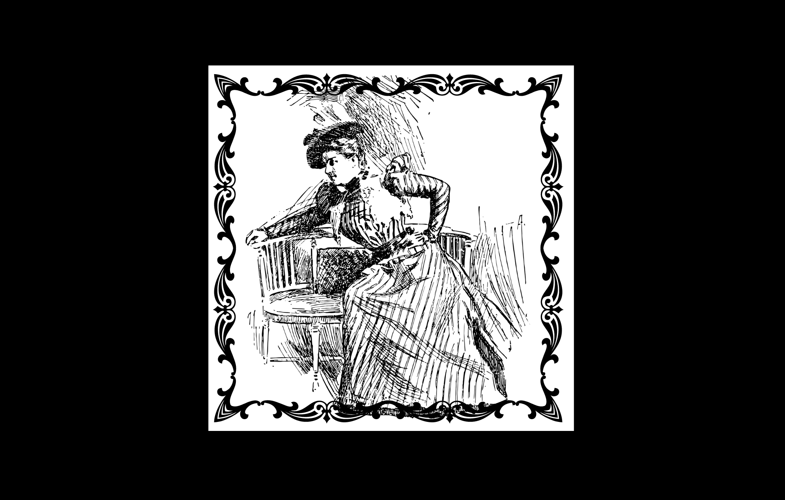

Caroline Serrano est une danseuse classique réputée du Royal House Opera, elle a l'habitude de traîner dans
les soirées mondaines qui lui permettent de trouver une proie. Même si du premier abord cette jolie femme semble
chercher l'amour, elle ne cherche que l'argent chez les hommes. Beaucoup d'hommes sont malheureusement tombés dans ses ruses,
même si la plupart s'en sont plutôt bien sortis, ce ne fut pas le cas pour Cyrus Sharpe.

Cyrus Sharpe célèbre avocat dans la haute avait rencontré Caroline Serrano lors d'une réception, il
tomba follement amoureux de cette femme et pendant presque deux ans, il lui offrit tout ce qu'il pouvait au point même de s'endetter.
Voyant que Cyrus Sharpe ne pouvait plus lui offrir, elle le laissa tomber. Cette rupture fut très difficile à digérer
pour l'avocat, qui ne voulant pas laisser tomber, essaya par tous les moyens de faire revenir la danseuse.
Face à ce comportement, Caroline Serrano fut perplexe car aucun homme n'avait essayé autant de revenir vers elle.
Plus l'homme revenait vers elle, plus elle se mettait dans une colère noire presque incontrôlable.
Elle l'avait prévenu une dernière fois que s'il continuait, elle disparaîtrait à tout jamais.
L'homme ayant pris peur, ne voulant pas la perdre s'est forcé de s'éloigner pendant quelques mois mais par chance ou
plutôt par malchance, il la recroisa à la réception de Monsieur Sheltonen où il a dû lutter contre sa volonté d'aller
la voir. Malheureusement son envie d'aller la voir était trop grande.
Il remarqua qu'elle était accompagnée d'un homme qu'il connaît d'ailleurs M. Lawrence Floyd,
mais cela lui importait peu, la seule chose qui voulait, ce n'était qu'elle.
Il l'a suivi et suivi la calèche dans laquelle elle se trouvait.
C'est à ce moment-là que le conducteur de calèche le remarqua et arrêta le véhicule.
Quand Caroline Serrano entendit du conducteur qu’un homme les avait suivi en courant, elle comprit tout de suite et
qu’elle devait gérer la situation si elle voulait garder auprès d’elle l’homme qu’elle avait séduit à la réception.
Alors elle sortit pour aller lui parler, malheureusement la conversation avait l’air de s’envenimer et M. Lawrence Floyd
alcoolisé et pensant qu’un voyou voulait s’en prendre à la femme qu’il convoitait, est sorti avec un arme à feu juste histoire
de faire peur et faire fuire l’homme.
L’homme ne voulant pas fuire, il lui donna alors des coups de canne espérant que l’homme fasse à ces coups partirait pour
bon sachant qu’il était très instant auprès de Caroline Serrano.
Mais la situation dégénera quand la femme prit l’arme des mains de M. Lawrence Floyd pour menacer Cyrus Sharpe.
Sous la folie de sa colère, elle appuya sur la gâchette sans vraiment se rendre compte. C’est quand elle a remarqué
le corps du pauvre Cyrus Sharpe baignant dans son sang qu’elle s’est réveillée de sa folie.
Ayant peur que quelqu’un voit ce qui venait de se passer, elle tira M. Lawrence Floyd loin de la
scène de crime, espérant que personne n’est rien.
Malheureusement en cours de route, la pierre d'émeraude de la chevalière de M. Lawrence Floyd tomba sur le sol boueux.